Arquitetura do sistema
O Nemesis intercepta a ação de um agente de IA antes de ela executar e nega o que é destrutivo ou malicioso.
Instrução no prompt é probabilística (o agente pode ignorar); enforcement por exit 2 é determinístico. São três camadas independentes. Tudo 100% local.
O fluxo, do início ao fim
Da ação do agente até permitir, bloquear ou colocar em quarentena.

As três camadas, lado a lado
Quando cada uma age, onde, o que faz e o que pega. São independentes: se uma falha, a próxima segura.

Os conceitos, um a um
Os mesmos diagramas que o onboarding consome em cada página de conceito estão na pasta diagramas/.

diagramas/.